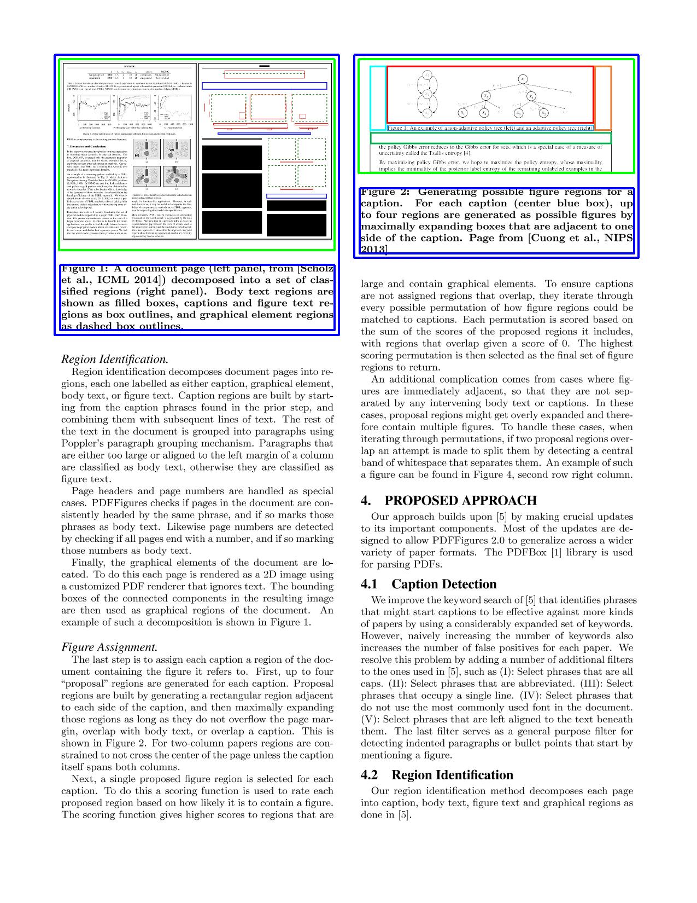
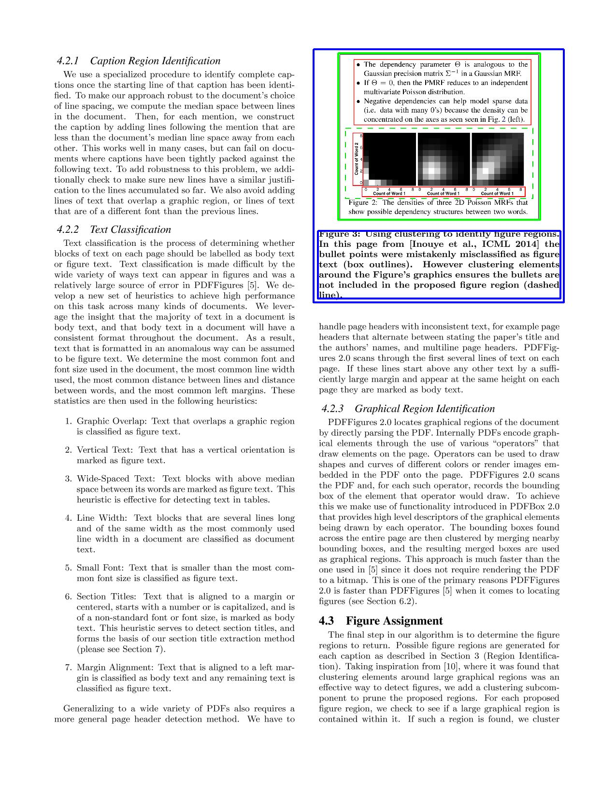
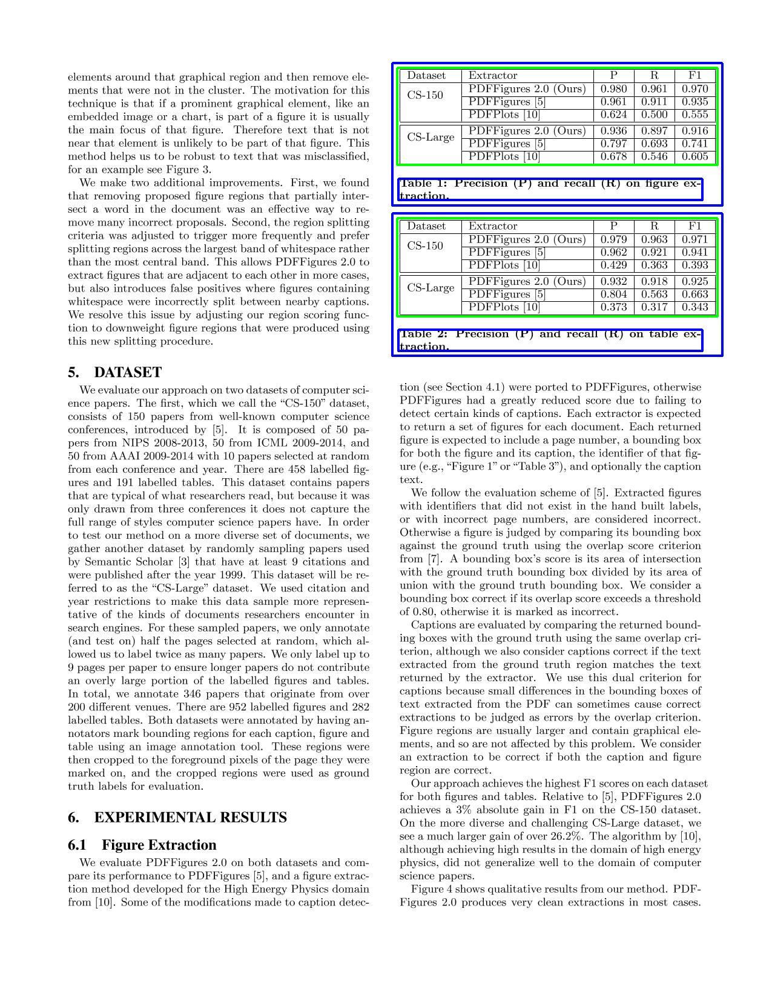
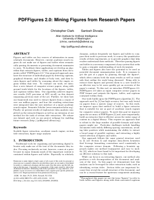

PDFFigures 2.0:
Mining Figures from Research Papers



Figures and tables are crucial components of scholarly artices, but are often ignored by information extraction technologies due the difficulty of locating and extracting them. PDFFigures 2.0 solves this problem by extracting figures, tables, captions, and section titles from scholarly PDFs. It an expansion of the original
PDFFigures algorithm, with a focus on being able to extract the figures from almost any kind of document in the domain of scholarly computer science papers. PDFFigures 2.0 powers the figure extraction feature in
Semantic Scholar.
Abstract
Figures and tables are key sources of information in many scholarly documents. However, current academic search engines do not make use of figures and tables when semantically parsing documents or presenting document summaries to users. To facilitate these applications we develop an algorithm that extracts figures, tables, and captions from documents called "PDFFigures 2.0." Our proposed approach analyzes the structure of individual pages by detecting captions, graphical elements, and chunks of body text, and then lo- cates figures and tables by reasoning about the empty regions within that text. To evaluate our work, we introduce a new dataset of computer science papers, along with ground truth labels for the locations of the figures, tables, and captions within them. Our algorithm achieves impressive results (94% precision at 90% recall) on this dataset surpassing previous state of the art. Further, we show how our framework was used to extract figures from a corpus of over one million papers, and how the resulting extractions were integrated into the user interface of a smart academic search engine, Semantic Scholar (www.semanticscholar.org). Finally, we present results of exploratory data analysis completed on the extracted figures as well as an extension of our method for the task of section title extraction. We release our dataset and code on our project webpage for enabling future research.
Paper and Citation

"PDFFigures 2.0: Mining Figures from Research Papers"
Christopher Clark and Santosh Divvala. In JCDL 2016.
[Paper] [
Show Bibtext
]
Code and Dataset
Our implementation and dataset is available on
github. PDFFigures 2.0 is written in Scala and uses
PDFBox for PDF parsing.
Contact
Christopher Clark, csquared@cs.washington.edu